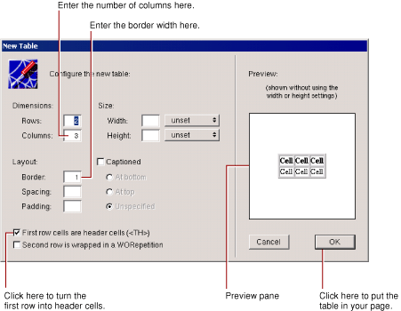

Legacy Document
Important: The information in this document is obsolete and should not be used for new development.
Enhancing Your Application
In the previous tutorial, you learned how to create a web component that has input and output elements and how to bind these elements to variables and methods in your code.
Now you’ll add some additional features to your project that move it a bit more in the direction of being a real-world web application. The application will
Use a custom Java class to represent the data for a guest, rather than using three separate variables.
Maintain a guest list, that keeps track of all guest data (whether entered by you or multiple users of your application), rather than just the current guest.
Have a second component, so that the guest list is displayed in a new page rather than the same page.
Make use of additional interface elements (such as HTML tables).
In this section:
Duplicating Your Project
Creating a Custom Guest Class
Keeping Track of Multiple Guests
Adding a Second Component
Using a Repetition
Adding the Finishing Touches
Duplicating Your Project
Before proceeding, you’ll create a new project by copying the old one and renaming it. This way, you can make changes and still retain your previous version.
In WebObjects Builder, close the component window.
If there are any unsaved files, you are prompted to save them.
In Project Builder, close GuestBook’s project window.
If there are any unsaved files, you are prompted to save them.
In your computer’s file system, navigate to the directory where your project is located.
Duplicate the GuestBook folder.
On Windows, select the folder, choose Edit > Copy, then Edit > Paste.
Rename the new folder (Copy of GuestBook) to GuestBookPlus.
Open the newly renamed folder and double-click the project file
PB.project.Project Builder opens a new browser window for this project. (Alternatively, you could have opened the project from within Project Builder by choosing Project > Open, then navigating to the project folder and selecting
PB.project.)
Click in the toolbar to bring up the Project Build panel.
Click in the Project Build panel.
This command deletes all the files that were generated when you built the project previously.
Click to open the Project Inspector.
Choose Project Attributes from the pop-up list at the top of the window.
In the Name field, enter GuestBookPlus and press Enter.
Respond No to the prompt that asks if you want to rename the folder.
You now have a new project called GuestBookPlus.
Creating a Custom Guest Class
In “Creating a WebObjects Application Project,” you created individual variables to store a guest’s name, e-mail address, and comments. When keeping track of multiple guests, it’s more useful to encapsulate all the data for a guest as a single entity. You’ll do this by creating a Java class that contains the data for a single guest.
In Project Builder’s browser, select Classes in the first column.
Choose File > New in Project.
Type Guest.java as the name of the file.
Click OK.
The newly created file contains a skeleton for a class called Guest.
Modify the code so it looks like this:
// Guest.java created by ...
import com.webobjects.foundation.*;import com.webobjects.eocontrol.*;
import com.webobjects.eoaccess.*import com.webobjects.appserver.*;
public class Guest extends Object { protected String guestName; protected String email; protected String comments;Guest() { guestName = ""; email = ""; comments = ""; }}
A class stores information in its instance variables (also referred to as data members). Here you’re declaring three instance variables for Guest:
guestName,email, andcomments. Note that these declarations are the same as those that appeared in the code forMain.javawhen you added the three variables using WebObjects Builder. In WebObjects, a component is also a class, specifically a subclass of the class WOComponent.Java classes require a constructor to initialize an instance (or object) of a particular class whenever one is created. A constructor has the same name as the class and returns no value.
Whenever your application creates a new Guest object, its instance variables are initialized with empty strings. (If you prefer, you can use different strings for these initial values.)
Save
Guest.javaby choosing Save from the File menu.Saving the file lets WebObjects Builder know about your newly created Guest class.
Binding the Class’s Instance Variables to the Form Elements
In “Creating a WebObjects Application Project,” you bound the input elements to variables in Main’s code. Now you’ll modify the bindings to use the class you just created.
Select Web Components in the first column of the browser.
Double-click
Main.woin the second column of the browser to open the component in WebObjects Builder.Using the Add Key panel, add a variable called
currentGuestto your component and specify its type as Guest. (Note that you can now choose Guest from the Type combo box.)An entry for
currentGuestappears in the object browser. Notice the “>” symbol to the right of its name. This means that there is additional data to be displayed in the second column.Select
currentGuestin the object browser.The second column displays the three fields of
currentGuest, as determined by the definition of its class, Guest.Make a connection from
guestNamein the second column of the object browser (next tocurrentGuest) to the Name text field (press the mouse button down on the variable, drag to the element, and release the mouse button), and clickvaluein the pop-up menu.This time, when the pop-up menu appears, there is a dot next to the
valueattribute because you bound it in the first tutorial.Bind the other two input elements to
currentGuest.emailandcurrentGuest.commentsin the same way.
Creating a Table to Display the Output
In the first chapter, you created three WOString elements to display the information the guest entered. In this tutorial, you’ll create a different type of element, an HTML table, to display the information. In later tasks, you’ll display data for multiple users in the table.
Delete the WOString elements below the horizontal line in the Main component, because you’ll be replacing them with a table. Select the WOString elements and choose Cut from the Edit menu to delete them.

Click the button.
The New Table panel appears. On the right is the Preview pane, which displays what your table will look like.
Click OK. The table appears in your page.
Select the upper-left cell of the table by clicking it.
Change the text in the cell to Name.
Open the Inspector if it is not already open.
The Inspector presents a number of modifiable settings that apply to the table cell you’ve selected.

Select pixels from the Width pop-up list. Enter 150 in the Width field and press Tab.
The width of the column is set to 150 pixels.
Click in the component window, then press Tab.
Pressing Tab when editing a table causes the contents of the next cell to the right to be selected (or the first cell of the next row if in the rightmost column). Pressing Shift-Tab moves in the opposite direction through the table.
Repeat steps 5 through 8 for the second and third cells of the top row. Label the middle column E-mail and set its width to 150 pixels. Label the third column Comments and leave its width unset. (The comments field takes up the remainder of the width of the table.)
Adding Dynamic Elements to Table Cells
Tables and cells are static HTML elements, so you can’t bind them to variables or methods. To display dynamic information in cells, you add dynamic elements, such as WOStrings, to the cells.
Select the first cell on the second row of the table and clear its contents.
Click to add a WOString to the cell.
Press the Tab key.
The contents of the next cell to the right are selected.
Repeat steps 2 and 3 for the other two cells in the second row.
Binding the Dynamic Elements in the Table
Make a connection from
currentGuest.guestNamein the object browser to the center of the WOString in the first column to bind itsvalueattribute.Similarly, bind
currentGuest.emailandcurrentGuest.commentsto the WOStrings in the second and third columns.The table should now look like this:
Save the Main component.
Creating the Guest Object
Earlier in this chapter, you created a Java class of type Guest and wrote a constructor for it. You also added a variable of that class, currentGuest, to the Main component. However, adding a variable to the component doesn’t actually create a new Guest object; you need to create one explicitly at some point in your code.
You’ll create the Guest object in the constructor method for your component. This method is called when the component is first created; that is, the first time the user accesses the component.
Choose View Source File from the pull-down list at the bottom of the window.
Project Builder becomes active and displays the code for
Main.java. Notice the following declaration that was added to your code when you added thecurrentGuestvariable:public Guest currentGuest;
Delete the declarations of
guestName,email, andcommentssince you aren’t using them anymore.Add the constructor method inside the Main class definition:
public Main(WOContext context) { super(context); currentGuest = new Guest(); }The first statement calls the constructor of Main’s superclass (which is
com.webobjects.appserver.WOComponent). The second statement allocates a new empty Guest object and calls Guest’s constructor to initialize its instance variables.Save
Main.java.Save
main.woin WebObjects Builder.Build and run your application.
The application should work similarly to that in the first chapter, except that the guest’s data is displayed in a table at the bottom of the page instead of as plain text.
At this point, your application still handles information from a single guest only; in “Keeping Track of Multiple Guests,” you’ll modify the application so that it can keep track of multiple guests.
Keeping Track of Multiple Guests
You’ve been using the variable currentGuest in the Main component to hold the information entered by the user. You’ll need another variable (an array) to store the list of all the guests who have registered.
Before doing this, it is important to understand the scope and life span of variables in WebObjects:
Component variables, such as
currentGuest, exist for the lifetime of the component. These variables are defined in the component (in this case,Main.java) and are accessible only by its methods. Each user that uses a component gets a separate instance of the variable.Session variables exist for the lifetime of one user’s session and are accessible by all code in the session. They are defined in
Session.java. An instance of each session variable is created for each user.Application variables live as long as the application does and are accessible by all code in the application. They are defined in
Application.java. A single instance of an application variable is shared by all users of the application.
Creating a Guest List
To store the information from all guests that have accessed the application, you’ll create an application variable called allGuests, which exists for the life of the application.
In Project Builder, select Classes in the first column of the browser. Then select
Application.javafrom the second column.The application’s code appears in the window. The following listing shows the code generated by the Wizard, along with code you will add.
// Generated by the WebObjects Wizard ...
import com.webobjects.foundation.*; import com.webobjects.appserver.*;
import com.webobjects.eocontrol.*;
public class Application extends WOApplication {protected NSMutableArray allGuests;
public static void main(String argv[]) {WOApplication.main(argv, Application.class);
}
public Application() {super();
allGuests = new NSMutableArray();
System.out.println("Welcome to " + this.name() + " !"); /* ** put your initialization code in here ** */}
public void addGuest(Guest aGuest) {allGuests.addObject(aGuest);
}
public void clearGuests() {allGuests.removeAllObjects();
}
}
Note that there is one method already defined:
Application, which is the constructor for the Application object. The first line calls the constructor for Application’s superclass (which is the class WOApplication). The second line prints a message that you see in the Launch panel when you launch your application.After the call to
super, enter this code:allGuests = new NSMutableArray();
This statement initializes
allGueststo be a new object of class NSMutableArray. This class provides methods to add, change, and delete objects from an array.At the top of the Application class definition, enter this declaration:
protected NSMutableArray allGuests;
This declares
allGueststo be of type NSMutableArray. Declaring it protected means that it is accessible only from this class or one of its subclasses. It is standard object-oriented practice for a class to prevent other classes from directly manipulating its instance variables. Instead, you provide accessor methods that other objects use to read or modify the instance variables.Add the accessor methods
addGuestandclearGuests, as shown in the listing.The
addGuestmethod adds an object of class Guest to the end of theallGuestsarray, using the NSMutableArray methodaddObject.The
clearGuestsmethod removes all the objects from the array using the NSMutableArray methodremoveAllObjects.Save
Application.java.
Adding Guests to the Guest List
Now, when the user submits the form, you’ll add the information to the allGuests array rather than displaying it directly.
Switch to the code for
Main.java.In the
submitmethod, add the following code before the return statement:((Application)application()).addGuest(currentGuest);
currentGuest = new Guest();
This code calls the application’s
addGuestmethod, which adds an object (in this case,currentGuest) to the end of the array. Then it creates a new Guest object to hold the next guest’s data.Note:TheaddGuestmethod is defined in the class Application, which is a subclass of WOApplication. The component’sapplicationmethod (called in the above statement) returns an object of type WOApplication, so you must cast it to Application in order to access itsaddGuestmethod.
Your next step is to create a new component to display the list of guests that allGuests stores.
Adding a Second Component
In this section, you’ll create a new component.
In Project Builder’s browser, click Web Components in the first column.
Choose File > New in Project.
Note that the Web Components suitcase is selected.
Type GuestList as the name of the new component, then click OK.
The WebObjects Component Wizard appears.
Choose None for Available Assistance.
Click Finish.
In the second column of the browser, double-click
GuestList.woto bring up the component window in WebObjects Builder.Create a heading for this page, as you did for the Main component. Call it “Guest List” (or something else of your choosing), then press Shift-Enter twice.
Add a WOString below the heading. After the WOString, type the text “ guests have signed this guestbook.” Press Shift-Enter twice.
You’re going to bind this WOString so that it reflects the number of guests who have submitted this form.
In the object browser, click
application.There is an entry in the second column for the
allGuestsapplication variable you created. This entry appears in the Main component as well, since application variables are accessible from anywhere in the code.If you click
allGuests, you’ll see in the third column an entry forcount. This is a standard method that returns the number of objects in the array.Make a connection from
countto the center rectangle to bind it to the WOString’svalueattribute.Save the GuestList component.
You need to do one more thing so that the GuestList page now displays when the user submits the form.
Go back to Project Builder and view the source code for
Main.java. Replace the return statement in thesubmitmethod with the following code:return pageWithName("GuestList");pageWithNameis a standard WebObjects method (defined in the WOApplication class) that allows you to specify a new page to display.At this point, the code for
Main.javalooks like this:// Generated by the WebObjects Wizard ...
import com.webobjects.foundation.*;
import com.webobjects.appserver.*;
import com.webobjects.eocontrol.*;
import com.webobjects.eoaccess.*;
public class Main extends WOComponent {protected Guest currentGuest;
public Main(WOContext context) {super(context);
currentGuest = new Guest();
}
public WOComponent submit() {((Application)application()).addGuest(currentGuest);
currentGuest = new Guest();
return pageWithName("GuestList");}
}
Save
Main.java.Build and run your application.
Each time you submit the form, the number of guests displayed in the WOString should increase.
To return to the Main page, you’ll have to use your browser’s Back button. Later in the tutorial, you’ll add a hyperlink to return to the Main page.
Using a Repetition
Now you’ll create a table to display the entire list of guests in the GuestList component. To do so, you’ll use a dynamic element called a repetition (an instance of the WORepetition class). Repetitions are one of the most important elements in WebObjects, since it is quite common for applications to display repeated data (often from databases) when the amount of data to be displayed isn’t known until runtime. Typically, a repetition is used to generate items in a list or a browser, multiple rows in a table, or multiple tables.
A repetition can contain any other elements—either static HTML or dynamic WebObjects elements. In the GuestList component, you’ll create a repetition that contains a table row.
You’ll bind the allGuests array to the WORepetition’s list attribute. This tells WebObjects to generate the elements in the repetition once for each item in the array. Each time WebObjects iterates through the array, it sets the repetition’s item attribute to the current array object. You bind item to the variable currentGuest and use currentGuest’s fields to bind the elements inside the repetition (such as WOStrings). At runtime, the table will consist of one row (displaying name, e-mail address, and comments) for each guest.
In WebObjects Builder, make the Main component window active (double-click
Main.wo).Select the table at the bottom of the page by pressing outside it and dragging across it.
Choose Edit > Copy.
Make the GuestList component active.
Place the cursor at the bottom of the page and choose Edit > Paste.
You have just copied the table from Main into GuestList. It has all the same properties, including the bindings. The WOStrings in the table are still bound to instance variables of
currentGuest. SincecurrentGuestis a component variable defined in Main, it isn’t accessible from GuestList. Therefore, you need to declare it here.From the pull-down list at the bottom of the window, choose Add Key. Enter currentGuest as the name of the variable and Guest as its type, and click Add.
Click in one of the cells in the second row. Click <TR> in the path view to select the entire row.

Click in the toolbar.
When you wrap a repetition around a table row in this way, the WORepetition symbol
doesn’t appear in the table. Instead, the row appears outlined in blue. For additional examples of using repetitions, see “Creating a WebObjects Database Application.”In the object browser, select
applicationin the first column.In the second column, make a connection from
allGueststo the <WORepetition> tag in the path view.In the attribute menu that appears, click
list. This bindsapplication.allGueststo the WORepetition’slistattribute.Bind
currentGuestto the repetition’sitemattribute in a similar manner.By using the name
currentGuestfor theitemattribute, you are taking advantage of the fact that the strings in your table are already bound to the fields ofcurrentGuest.You now have finished implementing the repetition. When the table is generated, it will have one row for each item in the
allGuestsarray.Save the GuestList component.
Delete the table from the Main component, since you no longer need it.
Test your application.
Be sure to rebuild the application since
GuestList.javawas modified when adding thecurrentGuestvariable in WebObjects Builder. Building is required only when you have made changes to Java code. If you modify a component’s user interface only, the changes take effect even if the application is already running.Try entering data for multiple guests and verifying that each guest appears in the table.
Adding the Finishing Touches
There are a few additional things left to do to make your application a bit more user friendly:
Add a button that, when clicked, clears the guest list.
Add a hyperlink to the GuestList page that allows users to return to the Main page.
Clearing the Guest List
While developing your application, you may find it useful to be able to remove all guests from the list. (Typically, you wouldn’t allow users to remove all guests from the list.)
In WebObjects Builder, make the GuestList component window active.
Choose Add Action from the pull-down list at the bottom of the window. In the panel, enter clearGuestList as the name of the action and set the page returned to
null. Click Add.Choose View Source File from the pull-down list.
You’ll notice that there is a skeleton of the
clearGuestListaction method as well as the declaration forcurrentGuestthat you created previously.Enter the following code before the return statement in
clearGuestList:((Application)application()).clearGuests();
This code calls the application’s
clearGuestsmethod, removing all the Guest objects from the array.Save
GuestList.javaby choosing Save from the File menu.Go back to WebObjects Builder.
Place the cursor below the table and press Shift-Enter.

Click to add a WOForm element to contain the button you’ll create in the next step.

Click .
This creates a submit button that the user will click to clear the guest list.
Using the Inspector, double-click in the binding column next to the
valueattribute and type “Clear Guest List”.This changes the title of the button. Note that the quotes are necessary to indicate that you’re binding a string, not a variable.
Bind the
actionattribute toclearGuestList.When the user clicks the button, the
clearGuestListaction method is called, that causes the guest list to be cleared and the page to be redrawn.
Adding a Dynamic Hyperlink
Now you’ll create a hyperlink that returns the user to the Main page.
Place the cursor below the submit button (outside the rectangle of its containing form).
Click .
Type Return to Sign-in Page, replacing the selected text.
Inspect the hyperlink.
Select the
pageNameattribute, then double-click in the Binding column and type "Main" (including the quotes).Save the GuestList component.
Build and test your application.
The GuestList page should now look like this:
© 2004 Apple Computer, Inc. All Rights Reserved. (Last updated: 2004-02-01)